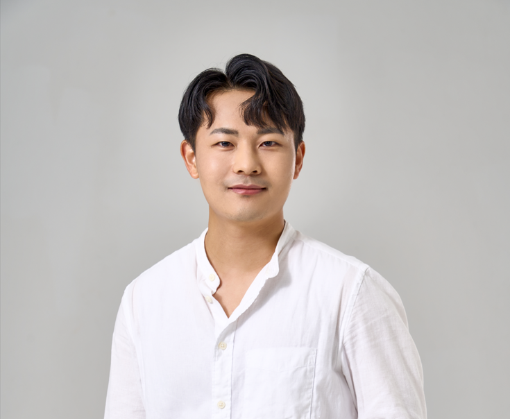

Stephen SW. Kang

Summary
A resilient storyteller and emerging developer who transforms hardship into hope and builds solutions that inspire and empower others.
Education
- B.A. in Political Science and International Studies, Yonsei University(2010-2017)
Work Experience
Researcher, Ajou Institute of Unification, Ajou University
Mar 2023 - Feb 2024
- Planned and operated metaverse-based education platforms by coordinating with developers and managing platform stability, requirements, and user experience.
- EDesigned structured curricula and experiential programs through systematic workflow building, data-driven iteration, and multi-stakeholder collaboration.
- Delivered precise administrative, financial, and performance reporting aligned with public-sector standards, ensuring accuracy, compliance, and operational efficiency.
Business Analyst, IGNITE Innovators Inc.
May 2018 - April 2021
- DExecuted global startup and incubation programs through end-to-end project coordination, stakeholder communication, and structured process management.
- Built and optimized operational workflows—contracts, documentation, evaluations, and cross-border financial processes—ensuring reliability and scalability.
- Coordinated with founders, partners, and internal teams to improve business models, streamline operations, and deliver data-informed program outcomes.
Skills
- Cross-functional Coordination: ⭐️⭐️⭐️⭐️⭐️
- Effectively collaborates with developers, internal teams, and external partners to drive aligned, efficient, and outcome-focused project execution.
- Process & Workflow Management: ⭐️⭐️⭐️⭐️
- Designs, organizes, and optimizes operational workflows—including documentation, administration, and financial processes—to ensure accuracy, scalability, and reliability.
- User & Program Design: ⭐️⭐️⭐️⭐️⭐️
- Plans and delivers programs, content, and educational experiences with a strong focus on user needs, engagement, and measurable impact.
Awards and Certifications
- Best Explorer Award – KBS History Exploration Program
- Git/GitHub Version Control – Certificate (Planned)
- Frontend Development Fundamentals – Certificate (Planned)
- Google Project Management Certificate – (Planned)
Other